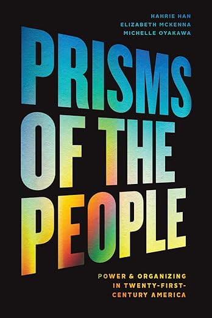

Books & selected publications.
Full list →
Under review
The Revolution Will Be Organized
A decade of fieldwork on why dense civic life sometimes builds democracy and sometimes corrodes it, and what that means for countries facing democratic backsliding now.

2014 · Oxford University Press
Groundbreakers
How the Obama campaign's 2.2 million volunteers transformed American politics. A multi-year study of movement-electoral politics at unprecedented scale, with Hahrie Han.

2021 · University of Chicago Press
Prisms of the People
Power, organizing, and twenty-first-century democracy. With Hahrie Han and Michelle Oyakawa. APSA Michael Harrington Book Award, 2022.